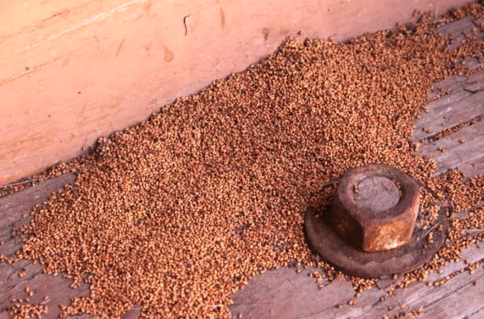
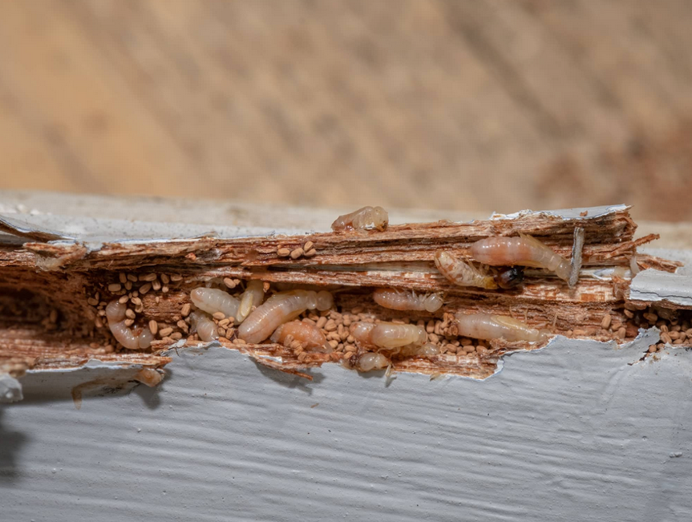

Termites of the Caribbean
Also published in Caribbean Compass. Republished by the author.
Yikes! dry-wood termites could be eating your beautiful boat!
By Tony Gagliardo
Imagine you are the owner of a gorgeous wooden sailing yacht. You take amazing care of her; you spare no expense or effort in maintaining her condition. From the tip of her bow, suspended over the water, sweeping back to her glistening varnished taffrail — everything is kept perfect. You are vigilant in protecting her. You are known for harassing your guests to only touch your deck with their bare feet and to leave no chemical trace of repellent, sunscreen, or anything aerosol that might deposit a residue that could scar her teak or dissolve her perfect varnish. You take no cardboard or other insect life-supporting objects aboard her. You’ve never had roaches (okay, just one) and nothing more than the occasional fly or mosquito.
The pandemic hit while you stored her on the hard for nearly three years. Eventually you began to work on your boat, starting with a marine survey. Then the bad news: Your surveyor says you’ve got termites, and your immediate thought is they’re eating your beloved wooden yacht!
It’s all hands-on deck, with no time to waste getting rid of them!
Treatment depends on several factors, starting with determining the type of termites you have. In the Caribbean and southern United States, there are two types of these wood-eating pests: Subterranean and drywood termites.
Subterranean termites are what visitors to the Caribbean are likely more familiar with since they affect buildings and structures back home that are on terra firma, where the pests move from the soil and into wood structures near or on the ground. They build mud tubes from the soil to their food source, which includes cellulose-based materials like wood. They rapidly destroy the structures they invade. Since boats are either in the water or stored well above ground, subterranean termites can be hindered from entering your vessel due to the open-air distance they would need to travel to enter your boat. Since a stored boat will sit on her keel and have shoring stands supporting her, pathways are well-defined, easily seen, and can be kept clear. Many owners coat their keel blocks and shoring stand screws in heavy grease that creates a barrier for any bugs like roaches, ants, and even subterranean termites.
Drywood termites are another matter. They are a termite species that infest and feed on dry, sound wood. Unlike subterranean termites that require contact with soil, drywood termites do not rely on the ground for survival and moisture. Instead, they infest dry wood found in structures, furniture, and other wooden items. In the Caribbean and tropics, boats stored in yards where there are forests and infected structures nearby are at great risk since drywood termites spread by flying over to your boat, landing on it, and finding their way inside.
Here are some key characteristics and behaviors of drywood termites:
- Habitat: Drywood termites typically live within the wood they infest, creating their colonies and galleries directly inside the timber. They do not require contact with soil or moisture sources.
- Feeding patterns: Drywood termites consume cellulose found in dry wood, including furniture, structural wood, flooring, and wooden fixtures. They extract moisture from the wood and can cause significant damage over time.
- Infestation signs: Common signs of drywood termite infestation include the presence of fecal pellets (tiny, granular pellets that resemble sawdust), discarded wings near windows or light sources, small kick-out holes on the surface of infested wood, and a hollow or papery sound when tapping infested wood.
- Geographic distribution: Drywood termites are found in various regions worldwide, but they are more prevalent in warmer climates. In the United States, they are commonly found in coastal areas of the southern states.
It’s important to note that drywood termites differ from subterranean termites in their habitat, behavior, and treatment methods. Understanding the specific type of termite infestation is crucial for implementing appropriate control measures and protecting wooden structures and items from damage.
When it comes to boats, termites can infest and damage wooden components such as the hull, decking, and structural supports. They can weaken the wood, compromising the integrity and safety of the vessel over time if left untreated. Once inside a boat, they typically target areas that have high moisture content, as it provides a suitable environment for their survival.
Not all boats are susceptible to termite damage, especially those made from materials other than wood, such as fiberglass or aluminum. However, for wooden boats or boats with wooden elements, proper preventive measures and regular inspections are essential to detect and address any termite infestation promptly.
Preventing drywood termites means sealing up any entrance points, no exposed damp structural wood (exterior teak is fine). Schedule frequent inspections for frass (termite poop), wings, and active termites flying and landing on your boat.
If a termite infestation is suspected, it is crucial to contact a professional pest control or marine surveyor specializing in termite inspections. They can assess the extent of the infestation and provide appropriate treatment options to eliminate the termites and repair any damage caused.
Signs of termite infestation may include:
- Presence of termite “swarmers” (winged reproductive termites) around the boat or near wooden structures.
- Mud tubes or tunnels on the boat’s exterior, especially on wooden supports, hull, or decking.
- Hollow or damaged wooden components, such as beams, frames, or flooring.
- Presence of termite droppings or frass (small, pellet-like excrement) near infested areas.
- Weakened or sagging sections of the boat structure.


Drywood termite infestations typically require localized treatments, such as spot treatments, fumigation, or heat, depending on the extent of the infestation and accessibility to the affected areas. Professional pest control services are usually required to eliminate drywood termites effectively. In most boat cases that I have been involved with, fumigation is the best option. It penetrates every crevice and permeates deep into wood structures where the termites are active, killing them all outright, and has the benefit of ridding your boat of other pests that may have taken up residence. Fumigation also leaves no lingering residue; once ventilated away, there is no risk to humans or pets. Since boats are mostly weather-tight, sealing them up is relatively easy when done with masking tape and plastic. Only on open boats that can’t be sealed to contain the fumigation gas will “tenting” be necessary.
Here are a couple of references for more detail about dry wood termites: https://entnemdept.ufl.edu/creatures/URBAN/TERMITES/Cryptotermes_brevis_west_indian_drywood_termite.HTM)
Marine surveyor Tony Gagliardo cruises fulltime with his wife Michelle and their son Angelo aboard their Swan 46, Artemis. Visit www.globalyachtsurveyor.com. This story originally appeared in the newsletter of the Society of Accredited Marine Surveyors.